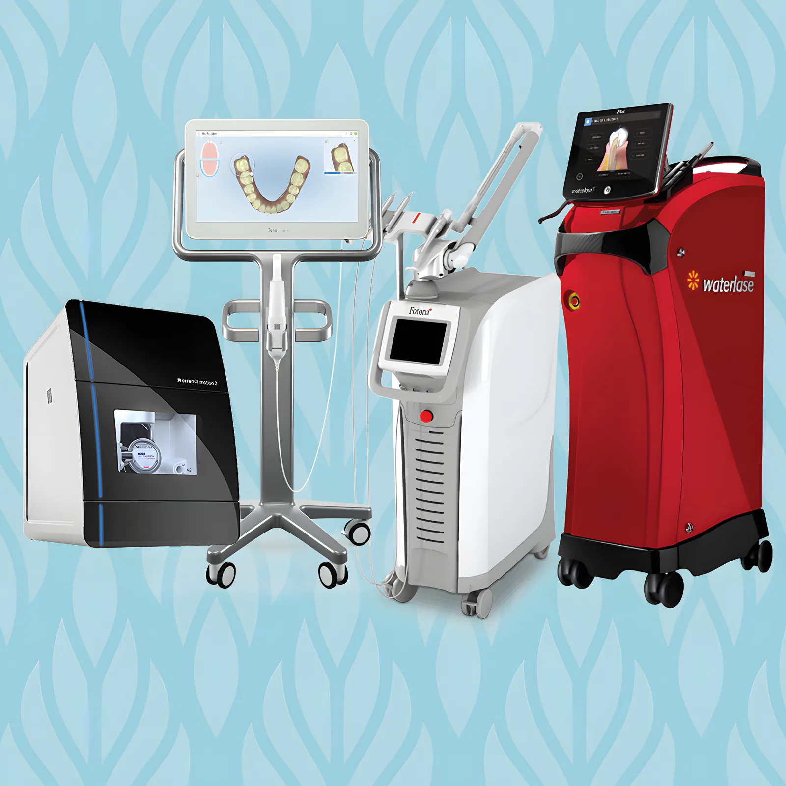

الرئيسية / العلاجات
العلاجات تحت سقف واحد
عشرة مجالات في طب الأسنان في فروعنا الثلاثة، والليزر حيث يجعل العلاج أسهل عليك. اضغط على العلاج لتعرف ما يشمله، ثم اتصل بأقرب فرع.

01طب الأسنان بالليزرحشوات وعلاج لثة وتجميل بالليزر
كنّا من أوائل العيادات التي أدخلت الليزر إلى البحرين. الليزر خيار أقل تدخلًا لجراحة اللثة وعلاج التسوس وغيرها، ويُستخدم للوقاية من التسوس والتبييض وتحضير الحشوات.
- تحضير الحشوات بالليزر
- علاج اللثة بالليزر دون جراحة
- علاجات تجميلية بالليزر
- علاج الشخير بالليزر (Elexxion Snore-3)
02تجميل الأسنانتبييض وقشور
فريق من الأخصائيين والمساعدين ومختبر بمعايير عالية، لأي تغيير من البسيط إلى ابتسامة كاملة.
- تبييض الأسنان
- قشور البورسلان
- Lumineers
- قشور الكومبوزيت
03التقويم و Invisalignتقويم ثابت ومتحرك، و Invisalign
تقويم الأسنان يحسّن شكلها ووظيفتها ويوزّع ضغط العض بالتساوي. يعمل على كل حالة أخصائي تقويم ومساعدون وفنيو مختبر. د. أدينا بشارت معتمدة في Invisalign.
- تقويم شفاف
- تقويم ماسي
- تقويم تقليدي
- تقويم متحرك (Quick Straight Teeth)
- Invisalign
04زراعة الأسنانتعويض الأسنان المفقودة
الزرعة دعامة من التيتانيوم توضع في عظم الفك تحت اللثة، ثم يُثبّت عليها سن بديل يشبه أسنانك. نستخدم الزراعة الموجّهة بالكمبيوتر.
- زراعة تقليدية
- زراعة فورية
- زراعة بتقنية الثقب
05ترميم الأسنانإصلاح الأسنان المتآكلة أو التالفة
إصلاح الأسنان المتآكلة أو المسوّسة أو المكسورة بالتقنية المناسبة لكل حالة، مع طبعات رقمية بماسح TRIOS.
- Inlay و Onlay وقشور
- تيجان وجسور بورسلان
- علاج العصب
06التركيباتتعويض الأسنان المفقودة
ترميم الأسنان المفقودة وتعويضها لتبدو طبيعية وتعمل كما يجب.
- تيجان وجسور
- أطقم كاملة أو جزئية
- زراعة
07طب الأسنان العامفحص وتنظيف وحشوات وخلع
الوقاية والتشخيص وعلاج أمراض الفم، مع الأشعة الرقمية وكاميرات الفم.
- فحص شامل وأشعة وتنظيف
- حشوات وعلاج عصب وخلع
- تبييض وقشور
- تيجان وجسور وأطقم
- علاج اللثة
- استشارة غذائية
08الوقايةأسنان سليمة قبل أن تبدأ المشكلة
العناية بأسنانك اليوم لتجنّب التسوس وأمراض اللثة وتآكل المينا لاحقًا، والتنظيف بجهاز EMS Airflow One.
- تعليمات العناية
- تنظيف وتلميع
- فلورايد
- سد الشقوق
- واقي ليلي
09أسنان الأطفالمن أول سن حتى المراهقة
أول زيارة خلال ستة أشهر من ظهور أول سن أو عند إتمام السنة الأولى. د. نوران وليد أخصائية أسنان الأطفال، تكتشف التسوس مبكرًا ليبقى العلاج بسيطًا.
- فحص مبكر
- حشوات
- حافظات المسافة
- تخدير الأطفال
10جراحة الفمضرس العقل والزوائد والأسنان المطمورة
العلاج الجراحي للأسنان وعظم الفك على يد جرّاحينا، بسرعة وكفاءة ليكون الإجراء أسهل عليك.
- خلع ضرس العقل
- استئصال الزوائد اللحمية
- كشف الأسنان المطمورة جراحيًا